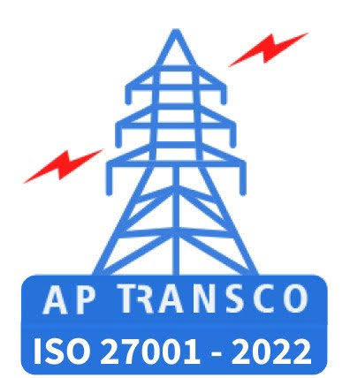

ϟ
220/132 kV SS Porumamilla
D.O.C.: 31-03-2017
220 kV Feeders04 Nos.
132 kV Feeders10 Nos.
PTR Capacity2 × 100 + 1 × 160 MVA

A unified digital information portal for APTRANSCO Porumamilla Sub Division. Access substation particulars, equipment registers, maintenance, testing and operational records.
Porumamilla Sub Division · APTRANSCO
Sub Division work highlights
Progress monitoring for RMI works
No RMI work items entered yet. Admin can add items when the work details are available.
Choose a portal section to continue
Bay-wise equipment particulars · All three substations
| Sl. No. | Substation / Bay | Equipment | Phase | Make | Type | Manufacturer Sl. No. | MFY | D.O.C. | Rating / Nameplate | Action |
|---|---|---|---|---|---|---|---|---|---|---|
| Loading the preloaded equipment register… | ||||||||||